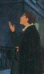
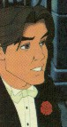

Christine Morgan

Hello, hello.
My name is Christine. This section is devoted to a little biographical blurb, in case you're wondering what warped me into the person I am today.Just for starters, it might help to know that my family background is anything but ordinary. My mother used to date a biker named Heavy Duty, and my father fights for the Louisiana 8th Infantry as a Civil War re-enacter.
As a kid, I was the fat one with glasses. As an adult, I'm much the same, only with higher self-esteem.
My fondest childhood memories involve our yearly trip to Lockheed Night at Disneyland and Fourth of July parties at Granny and Poppa's house.
My interests: Greek mythology, astronomy, meteorology, Stephen King,
Dean Koontz, fantasy role-playing games, German, French, medieval history,
British
comedy programs, Disney animation, experimenting with cheesecake
recipies, teaching myself to draw, collecting Gargoyles stuff, and
writing.
Ten Random Things I Can't Stand:
|
The One Book that Most Freaked Me Out:The Hot Zone by Richard PrestonTen of my Favorite Things to Read:
Calvin and Hobbes collections. |
Ten Random Things I Like:
|
Five Celebrities I Think are Really Really Attractive:
Three Steves that Influenced my Life:
|
Top Five Animated Hunks (Gargoyles):1. Goliath2. MacBeth 3. Xanatos 4. Brooklyn 5. Jason Canmore
|
Top Five Animated Hunks (Other):1. Dmitri from Anastasia2. John Smith from Pocahontas 3. Robin Hood (the Disney fox version) 4. Chernabog, demon from Fantasia 5. Nightwing, from B:AS   |

A timeline of important events:
1967 -- born in La Mirada, California, on March 30th, to Tom and Laurie Atkins.1972 -- moved to Lancaster, California, near such scenic geography as the San Andreas Fault, Edwards Air Force Base, and the Mojave Desert. Too hot in the summer, too cold in the winter, and too windy the whole year 'round.
1973 -- parents asked if I'd like a little brother or sister. I said I'd prefer a puppy, but they went and brought Amy home from the hospital anyway.
1976 -- just when I'd gotten used to Amy, here came brother Matt!
1977 -- first exposure to Stephen King, when I found The Shining in the bookshelf of horror novels my Boompa (don't ask) kept in the garage. I think Grandma didn't let him keep scary books in the house, like they were dirty or something. Mom warned me that I'd never be able to go on Small World again because of the hedge animals but otherwise didn't censor my reading. And thus began a love affair with S.K. that continues to this day. I still have that battered old copy of The Shining, which had a silvery cover that peeled off.
1980 (ish) -- parents divorced, actually something of a relief after all the arguing and tension.
1981 -- discovered fantasy role-playing games, odd enough for a female and odder still when it was my mother and her friends Patti and Don that got me started. After our very first session, we stopped at the store and Mom plunked all the books into my hands (Basic D&D) and told me that if Don could do it, so could I. All these years later, I'm still going strong, although I switched over to Steve Jackson's GURPS when it came out.
1985 -- graduated from Quartz Hill High School and enrolled at Humboldt State University (no, I don't have any pot; that's the first thing everybody asks!) because it met my criteria for college: not in a city, someplace cool, with trees. I was going to major in English but changed my mind to Psychology at the last minute.
1987 -- got married. Big mistake, but I didn't know it at the time.
1989/1990 -- these two years were filled with enough trauma and drama to get me a spot on a talk show. During this time: fell in love with a friend, got divorced, got engaged, was diagnosed with cancer of the thyroid, had surgery for same, graduated with a B.A. in Psychology, moved to Seattle, got a job in a residential treatment facility for the chronically mentally ill, and officially began work on my first novel.
1991 -- finished my first novel and began the long dance of publishers and agents.
1992 -- got married on May 23rd so that our anniversary would be 5/23. Acquired a cat and named him Schroedinger. Nobody ever gets either reference.
1994 -- bore a daughter, Rebecca Jaenyth Morgan, on October 22. The middle name is from a Steve Jackson Games GURPS module, but we tell everyone it's just a Welsh form of Janet because it's easier than trying to explain. Never even resisted getting hooked on the show Gargoyles.
1995 -- got my five-year certificate for working at that residential treatment facility, only by now as the Program Coordinator instead of just a lowly counselor.
1996 -- first publishing credit! A "Supporting Cast" article in the Jan/Feb issue of S.J. Games Pyramid magazine! Thirty-eight bucks, the first time I've ever been paid for doing this! In May, went on a Gargoyles fan-fiction writing binge, turning out six stories in five weeks.
Sept. 1996 -- my agent sold my first book. Titled Starlight & Shadow, it should be published in 1997 by Caramoor Press.
1996 -- Caramoor Press turns out to be a fly-by-night con artist, so the book deal falls through. Instead, I am offered a contract by Sterling House Publishers, a company owned by the agency, which recently branched out into handling fiction.
1997 -- Changed the title of my book to Curse of the Shadow Beasts, now with a release date of July 1998.
August 1997 -- Attended The Gathering, a Gargoyles convention in Manhattan, and discovered that I hadn't realized just how popular (or maybe notorious) I was due to my fanfic.
1998 -- work continues preparing Curse of the Shadow Beasts for publication. Many talented friends contributed artwork to the website and the ad. I gave up my Program Coordinator post at work before they could restructure it out from under me, and went back to all overnights so I'd have more time to write.